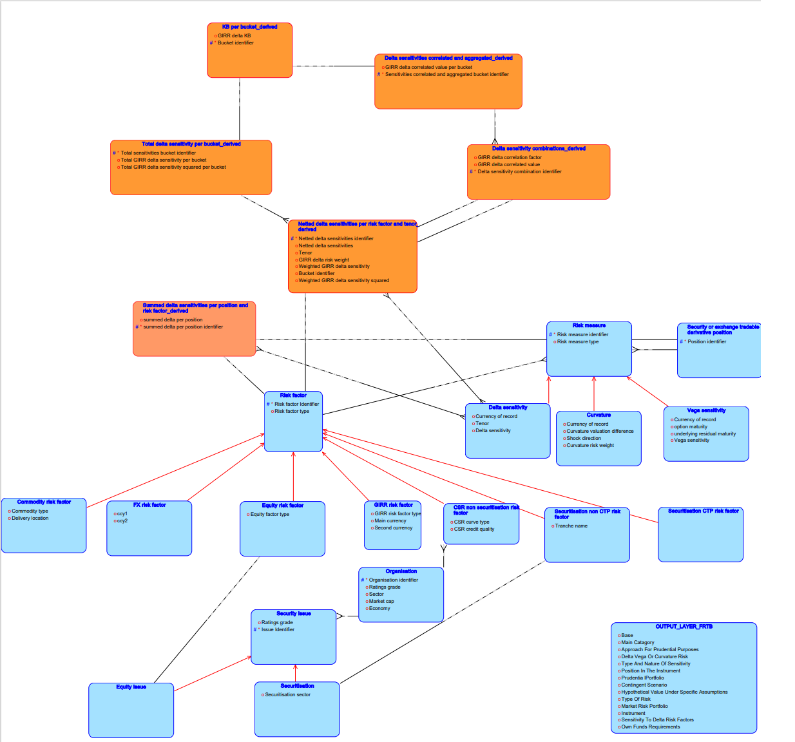
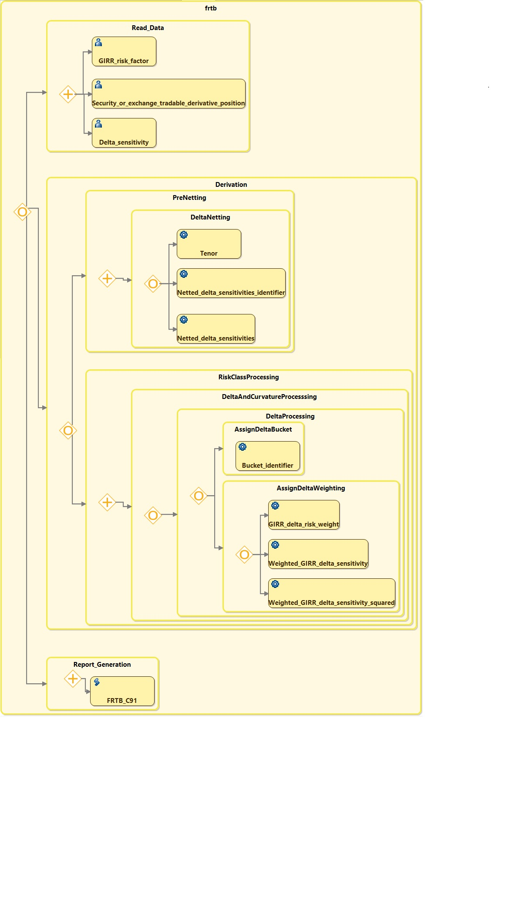

FRTB
Eclipse Free BIRD Tools introduces Ecore4Reg as a means for Regulatory experts to easily describe and collaborate on
machine readable requirements documents without programming experience.
As a showcase of Ecore4Reg we use it to record the requirements
and tests for the FRTB Sensitivities Based Approach regulations, which is amongst the most complex regulations existing.
Since tests can be traced back to regulatory text we hope that this will be a valuable open free tool for model validation for banks testing their FRTB solutions
FRTB data model and Process model
We show below the FRTB datamodel derived from the regulatory requirements, and the workflow of processing.
Work is continuing to improve traceability from tests to workflow to regulatory text and increase the number of tests. Since this is open source project, contributions and review and discussion are always welcome
The Ecore4Reg text files are available on
Github
You can install the Eclipse Free BIRD tools application and open FRTB as an example by following the instructions on the Eclipse Free BIRD Tools
Wiki

